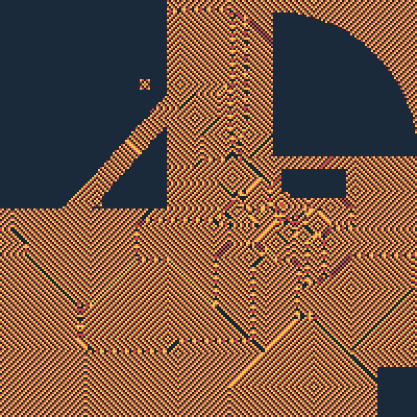

2.2Savanna direction — 100B-cell existence proof4:172:02
2.3§5 · DagDB Engine6:190:12
2.4DagDB direction — graph database with LUT6 nodes6:312:54
2.5§6 · Proteins9:250:10
2.6Proteins direction — Isomorphic Walk9:352:18
2.7§7 · Applied math11:530:09
2.8Applied math — citations and lineage12:023:37
2.9§8 · Architecture details15:390:11
2.10Architecture direction — engine internals15:504:20
2.11§9 · Theoretical math20:100:11
2.12Theoretical math — open directions20:214:16
Layer 3 — Appendix24:40
3.1Appendix · Three months on one laptop24:374:08
3.2Appendix · The hive itself28:452:52
3.3Appendix · Bio digital twin — the goal31:372:40
3.4Appendix · Hepatocyte Pass 234:172:22
3.5Appendix · UMA performance36:391:59
3.6Appendix · Tokyo CA — Voronoi38:382:10
3.7Appendix · Full inventory walk40:488:29
A peculiar piece of software · and the substrate underneath it
The Work
A private research institute in a laptop. Three months. One M5 Max. Three engines.
Amateur engineering project. No competitive claims. Errors likely. Engine source is the source of truth; if anything in this deck contradicts the code, the code wins. Every claim maps to a row in the calibration anchor (verified · spec · overclaim-risk).
These six are what the work is. The next six pages introduce each pillar in one breath. Then we go in.
Savanna
A ternary lattice running on Apple Silicon GPU, scheduling cells in seven phases via distance-2 chromatic separation on a hexagonal grid. The substrate that hits the central GCUPS number on a laptop.
14.4GCUPS
at 1 billion hex cells · 522 ms/tick · M5 Max · 10-run published, 95% CI
Every node holds a 64-bit truth table — six inputs, one output, the same primitive that lives at the heart of an FPGA. Nodes wired into a ranked acyclic graph; the engine evaluates the whole graph in parallel on the GPU each tick. Snapshots, write-ahead log, multi-version reads — durable like a real database.
The BACK_EDGE primitive lets state latch across tick boundaries — unlocks AC-3 constraint propagation, Hopfield-style recurrent networks, Boolean networks with feedback.
Geometric reasoning over protein conformations. Substrate, not folding prediction. AlphaFold gives you the structure; we operate on it.
The hepatocyte 10⁷ Pass 2 schema lays in a spatial-adjacency layer with hepatic-zonation policy ranks (sixteen levels, periportal to pericentral). The graph encodes what is adjacent in space; the engine reasons over the topology.
Memory layout via Morton Z-curve — cache-friendly traversal that delivers a 2.11× speedup over row-major at one billion cells. Distance-2 chromatic separation on the hexagonal grid uses exactly seven colours (Molloy–Salavatipour 2005), with the engine using (col + row + 4·(col & 1)) mod 7 as the colour-class formula. The combination is what makes the substrate parallelizable on commodity GPU hardware.
Apple unified memory used as zero-copy substrate — no CPU/GPU buffer boundary. Tile-streaming scaffold for 10¹¹ nodes on one M5 Max: page tiles to and from NVMe, two tiles resident at a time, cross-tile addressing via 24-bit-tile + 40-bit-local u64 global ID.
Three-environment separation — dev / test / prod under guarded paths. Triple-write to markdown, DagDB, and Postgres with markdown as the leader.
The substrate the simulation engines run on assumes regularity properties of the underlying space. CVPDE-class results — Almgren-monotonicity-style — are foundation lemmas that have to hold for the substrate to behave the way the engineering claims.
Open directions: extension to non-uniform grids, generalization beyond hexagonal lattices, sharper bounds on the chromatic number under non-uniform-distance constraints.
The 100-billion-cell existence proof — and where the M5 thermal ceiling actually lives.
Direction
4 — Savanna Engine (existence proof for the scale path)
Calibration: this slide reports a VERIFIED build. Savanna ran 100
billion cells over 9 hours on one M5 Max laptop, peaked 15.8 GCUPS,
wrote 500 GB of state to disk. Same dispatch + Morton + 7-coloring
machinery DagDB inherits — making this the existence proof for DagDB’s
trillion-cell scale path. Honest framing guard: Savanna’s FLUID kernels
(scent, density, predator-prey, peristaltic streaming) are intentionally
NOT in DagDB. Conflating the two is overclaim risk. See
one_pager.md’s “DagDB inherits Savanna’s physics engine”
overclaim callout for the precise lineage boundary.
What
A predator-prey-grass spatial-lattice simulator on Apple Metal GPU,
running discrete biology on a 1024×1024 hex grid as a test workload
for the underlying spatial-compute machinery. The biology is the
load — the engine is what’s being measured.
Three engineering primitives load-bearing the throughput:
Hex 7-coloring for lock-free parallelism.
Distance-2 chromatic number of the squared hex lattice is 7 (Molloy
& Salavatipour 2005); same-coloured cells share no neighbour, so
each colour group dispatches in full GPU parallelism with no
atomics.
Morton Z-curve memory layout — 2.11× speed-up at 1
billion cells over row-major, pure L2-cache-locality win on UMA
hardware.
Lock-free chromatic dispatch — 13 kernel dispatches
per tick, state lives in unified memory, zero CPU↔︎GPU copy.
Same machinery DagDB inherits (HexGrid, Carlos Delta encoder, halo
file format). Different per-cell state: Savanna stores fluid + scent +
entity tables; DagDB stores Boolean LUT6 + ranked DAG metadata.
Why on the the deck
Existence proof for the trillion-cell scale path.
The verified 100 B / 9 h Savanna run on one M5 Max laptop is the highest
scale the substrate machinery has actually shipped. DagDB’s
tile-streaming spec for 10¹¹ nodes
(docs/tiled-streaming.md) targets the same hardware
envelope. Without Savanna’s existence proof, DagDB’s trillion-cell goal
is just a target. With it, the engineering question reduces to “can we
tile the LUT6 / BACK_EDGE state across NVMe at the same machinery’s
throughput envelope?” — a tractable engineering question rather tha
feasibility one.
Numbers (verified, M5
Max, 10-run validated)
Grid
Throughput
Wall
State
Real-time?
1 M cells
1 634 tps
sub-second
23 MB
✓
16 M cells
77 tps
~13 s
367 MB
✓
64 M cells
19 tps
~52 s
1.5 GB
✓
1 B cells
1.2 tps
~14 min
23 GB
✓
100 B cells
~3 tps*
9 hours
500 GB
(thermal-throttled)
100 B run hit M5 thermal ceiling; 9-hour wall reflects sustained
throttled state, not headroom. Same dispatch machinery, different
per-cell load.
Peak: 27.1 GCUPS measured at 16 M cells, 10-run
validated, < 1 % standard deviation. Sustained 100
B: 15.8 GCUPS — figure cited on the deck.
One
representative engineering overcome — Type II satiation
Saw the predator-prey simulation collapse repeatedly to extinction:
lions kill all zebras, then starve. Classic thermodynamic suicide
switch. Gemini Deep Think’s diagnosis: the per-tick lion energy update
needed a satiation cap so well-fed lions stop hunting and become a
“physical meat shield” — preventing the runaway overhunting that
triggered the death spiral.
Implementation: one inequality in the lion tick_phase
kernel (if my_energy >= SATIATION_THRESH: don't_hunt).
Predator-prey populations stabilize at oscillating limits. Same fix
Holling 1959 prescribes for ODE-level Lotka-Volterra; we just learned
why it’s load-bearing on a discrete lattice the hard way.
The white paper’s eight-overcome teardown lists the full set —
including the LCG-parity “ghost wind” hash bug, the chromatic- advection
dispatch-order drift, the Atto-Fox sub-individual extinction trap, and
the Voronoi-formation “lion haboob” that emerged unbidden from the
corrected dynamics.
DagDB lineage tracking:
dagdb/Sources/DagDB/HexGrid.swift (lifted verbatim),
Sources/DagDB/CarlosDelta.swift (encoder preserved).
Per-cell state and biology kernels NOT inherited.
Calibration block
Claim
Label
100B-cell run, 9 hours, 15.8 GCUPS
VERIFIED
7-coloring proves topological cleanness (no Euler scars)
VERIFIED
Morton Z-curve 2.11× at 1 B cells
VERIFIED
Type II satiation prescribed by Deep Think; broke the death
spiral
VERIFIED (caught + fixed; whitepaper §4)
Same dispatch + Morton + 7-coloring machinery as DagDB
VERIFIED (code-level lineage)
Savanna’s fluid kernels run on DagDB
OVERCLAIM — DO NOT SAY
100 B cell + DagDB LUT6 = trillion-cell DagDB
SPEC (engineering target; tile-streaming spec’d not built)
Honest framing footer
What’s not claimed. Savanna is a fluid-dynamics-capable
spatial lattice engine — scent diffusion, peristaltic streaming,
predator- prey kinetics. DagDB is not. The lineage
between them is dispatch patterns + halo file format + Morton +
7-coloring. The fluid / scent / density kernels were intentionally
dropped when DagDB became Boolean-LUT-only. Conflating the two = the
precise overclaim risk flagged in one_pager.md. The
existence proof Savanna provides for the scale envelope is real; the
engineering question for DagDB at 10¹² is “can we tile LUT6 + BACK_EDGE
state across NVMe at this throughput envelope” — which is a tractable
port, not a feasibility claim.
Filled by slvr 2026-05-01. Pub-screen gate before commit to
assets.
§5
DagDB Engine
A graph where every node carries its own program — and the whole graph runs in parallel each GPU tick.
Direction 5 — DagDB Engine
Owner: dag (engine internals); pub (editorial pass)
Status: DRAFT 1 (2026-05-02) Tier: 2
(medium level / main directions) Calibration anchor:../one_pager.md
Slot scope
One-slide condensation of DagDB’s engine story, sized for the
architect-grade audience to grasp the engine class and what makes it
different.
Required content: - Headline: graph database where
every node is a 64-bit truth table (LUT6); ranked DAG, evaluated on the
GPU each tick - BACK_EDGE primitive (synchronous-circuit register
pattern) verified via AC-3 round-trip — VERIFIED, 120+
Swift tests green - Snapshot v4 + WAL + MVCC — durable like a real
database - Bitwise LUT composition (COMPOSE AND/OR/XOR/NOT)
for runtime graph simplification - ~2 ms per tick at 1 M nodes on M5 Max
(engine throughput at the demo scale) - Pointer to the engine repo + the
wiki tab at github.com/norayr-m/dagdb-engine/wiki
What this slide does NOT do: - Claim “thinking
engine” — explicitly off per one_pager.md. Speedboat for
one narrow class of structured-dependency reasoning. - Mix
Savanna-physics framing in (those are different engines)
Slide content
(narration-ready)
Headline. A graph database where every node holds a
64-bit truth table — i.e., a programmable Boolean function with up to
six inputs. Same primitive that lives at the heart of an FPGA. Nodes
wire into a ranked acyclic graph; the engine evaluates the whole graph
in parallel on the GPU each tick. Persistent like a real database —
snapshots, write-ahead log, multi-version reads. One machine.
The four verified pieces.
6-bounded ranked DAG with LUT6. The engine. Bounded fan-in
keeps per-node compute trivial; the rank invariant
(rank(src) > rank(dst)) makes topological order
well-defined; LUT6 means each gate is one indirect read of a 64-bit
integer.
BACK_EDGE primitive — synchronous-circuit register pattern.
Combinational logic for the within-tick pass, plus typed back-edges that
latch state across tick boundaries. The same shape as Verilog
reg / non-blocking assignments. Verified end-to-end by AC-3
Australia 3-coloring round-trip against an independent Python reference:
per-tick equality across 21 register nodes, converges in 2 synchronous
ticks. 120+ Swift tests green. Without BACK_EDGE the
substrate hosts only feed-forward Boolean DAGs; with it, AC-style
constraint propagation, Hopfield-shape recurrent networks, and any
register-clocked dynamical system become natively expressible.
Snapshot v4 + WAL + MVCC. Power-loss-durable writes via
F_FULLFSYNC + replaceItemAt + dir fsync
(Apple-SSD discipline). WAL replay rolls forward through a crash. Reader
sessions take snapshots without blocking writers — concurrent queries
see a consistent view of the graph.
Bitwise LUT composition (COMPOSE).COMPOSE AND src1 src2 INTO dst, plus
OR/XOR/NOT. Collapses subgraphs into single LUTs without
re-evaluating the original tree at runtime. Useful for graph
simplification passes and for synthesizing complex gates from
primitives.
Throughput. ~2 ms per tick at one million nodes on
M5 Max.
Diagram — full architecture
Lifted verbatim from
dagdb-engine/site/sql-architecture.html (slide 15).
Surface. Engine repo
github.com/norayr-m/dagdb-engine, wiki tab on the same
repo, browser-runnable demos at
norayr-m.github.io/dagdb-engine/site/. The BACK_EDGE wiki
page is the deepest written reference for the primitive.
Source material
BACK_EDGE wiki page:
https://github.com/norayr-m/dagdb-engine/wiki/Back-edges
Calibration rows in ../one_pager.md: BACK_EDGE/AC-3,
Snapshot v4, MVCC, COMPOSE LUT — all VERIFIED
Calibration block (fill at
draft time)
Claim
Label
6-bounded ranked DAG with LUT6 gates
VERIFIED
BACK_EDGE primitive, AC-3 verified
VERIFIED — 120+ tests, per-tick equality with Python reference
Snapshot v4 + WAL + MVCC
VERIFIED
Bitwise LUT composition (COMPOSE)
VERIFIED
~2 ms per tick at 1 M nodes on M5 Max
VERIFIED — measured
Substrate hosts AC-style iteration to fixed point
VERIFIED via the AC-3 round-trip; substrate-class generalisation NOT
claimed
10¹¹ tile-streaming on one M5
SPEC — Step 4 scaffold landed, Steps 5–7 pending
Honest framing footer
(template)
What’s not claimed. DagDB is not a general thinking
engine. Missing: variables, quantifiers, first-order logic,
probabilistic truth, search/planning, recursive within-tick evaluation.
It is a fast specialised substrate for one class of
structured-dependency reasoning.
Stubbed by Pub on 2026-05-01. Drafted by dag on 2026-05-02.
Pub-screen pass before any external recording or distribution.
Method schematic: BFS suboptimal-tube on the residue contact graph
identifies allosteric-pathway residues better than the
Euclidean-cylinder baseline.
What
A method for predicting allosteric pathways in
proteins from a single static structure (the kind crystallographers
deposit in the PDB). The method treats residues as nodes in a graph and
3D contacts as edges, then runs fast graph algorithms — breadth-first
search and sparse spectral methods — to identify the corridor of
residues that mediates signal between two designated functional
sites.
Implemented as a Swift CSR breadth-first-search primitive on Apple
Silicon, exposed to Python via ctypes for analysis
pipelines. Two findings cleared pre-registered acceptance gates with
Gemini 2.5 DeepThink as neutral arbiter; one
algorithmic variant was rejected under the same protocol; two follow-up
variants ran as pilots that closed without warranting formal
pre-registration. All numbers below were locked before data
collection.
Why
Allostery is one of the central mechanisms of biological regulation —
GPCRs that account for roughly a third of clinically relevant drug
targets, ATP-driven motors, kinase signaling cascades, hemoglobin’s
cooperative binding. Identifying which residues actually carry the
signal between two functional sites is hard because the residues that
physically lie between them are usually a much larger set than
the residues that biologically matter.
Standard computational tools for this question fall into two
categories. Molecular dynamics simulates atom-by-atom
under realistic physics — gold standard, but a microsecond on a million-
atom system takes days on a GPU cluster. Elastic Network
Models (GNM, ANM) treat residue contacts as springs and solve a
matrix eigenvalue problem — cheap but O(V2) memory and
O(V3)
time; the dense Kirchhoff matrix doesn’t fit at viral-capsid scale. This
work explores a third path: discrete graph algorithms, O(V + E) sparse,
that run on a laptop.
How
Verified (real today,
measured, has tests)
Asymptotic scaling. On the 313,236-atom HIV-1
capsid (PDB 3J3Q), the Swift BFS finishes a full traversal in 6
milliseconds on M5 Max, sweeping 4.27 M contact edges.
Sustained throughput ~250 million traversed edges per second, 4 ns per
edge. ProDy GNM cannot run on this system: dense Kirchhoff requires
313, 2362 × 8 B ≈ 784 GB of
memory. This is a memory-exclusion claim, not a wall-clock
comparison — the two tools answer different questions; the
comparison only tells you which question is feasible at a given scale.
Reproducible at
experiments/2026-04-20_scaling_vs_prody/scaling_v2.py.
Allosteric pathway recovery — ESTABLISHED under
pre-registered protocol. On a cohort of 10 well-studied
allosteric systems (IGPS, PTP1B, β₂-AR, Hsp70, PKA, GlmS, ATCase,
tryptophan synthase, PFK, Abl), a BFS suboptimal-tube on an 8 Å Cα
contact graph identifies published allosteric-pathway residues better
than a Euclidean-cylinder baseline in 6 of 7 evaluated
systems. 3 systems were pipeline failures (seed-residue parsing) and
were dropped without substitution per the locked protocol — no
retroactive cohort manipulation. Median ΔF1 = +0.0707.
Pre-registered acceptance gate (locked with the arbiter before any data
were collected): ΔF1 ≥ +0.05 AND ≥ 70% wins. Both cleared. Ground-truth
residue lists from primary literature (Rivalta 2012 / Wiesmann 2004 /
Venkatakrishnan 2013 / Zhuravleva 2012 / Taylor 2012 / Lipscomb 2008 /
Schirmer & Evans 1990 / Azam 2008).
Recorded under
locked criteria (REJECT honestly)
Spectral snap walk against a forced target —
REJECTED. A second pre-registered hypothesis tested whether a
discrete walk along the Fiedler eigenvector λ2 of the contact-graph
Laplacian could predict per-residue mobility (H₁a) and a whole-system
structural-similarity score (H₁b) given two known conformers. Both gates
missed: H₁a observed median ρ = +0.146 vs the +0.35 ESTABLISH floor; H₁b
observed ρ = −0.358 vs the +0.65 ESTABLISH floor. Per the pre-committed
null clause: no retry with adjusted parameters, no parameter sweeps, no
cohort splits to rescue. The result is reported as the locked criteria
say it is. The arbiter’s post-verdict diagnostic called the algorithm a
rigid-body hinge detector — the Fiedler vector cleanly
identifies the axis between two graph-disjoint subdomains, but
rigid-body rotation has near- zero internal Cα displacement, so the
per-residue correlation vanishes exactly where the algorithm has nothing
to say.
Pilot (declared not counted,
closed)
Fiedler zero-crossing. Standalone variant: 3 of
9 evaluated wins versus BFS-tube, median ΔF1 = −0.020. Intersection
variant (BFS-tube ∩ Fiedler-ZC): 4 of 9 wins, median ΔF1 = −0.012, with
two large per-system wins (PTP1B +0.165, PFK +0.101) offset by one
structurally-meaningful catastrophic loss (Abl, where the bend axis and
the BFS path between A-loop and αC-helix are graph- disjoint, producing
zero intersection). Conclusion: standalone ZC not worth formal
pre-registration; intersection variant is precision-rich but
recall-poor, parked pending a precision-at- fixed-recall evaluation
framework.
λ₃ multi-mode spectral subspace. The arbiter
named “λ₂ through λ₅ subspace” as a possible recovery direction. Pilot
tested the smallest extension toward that idea: λ₃ alongside λ₂ across
three formulations (standalone, union, 2D subspace axis). All three
produced median ΔF1 ≈ −0.17, 2 of 9 wins each. Adding v₃ to the
borderline intersection variant dilutes it (median ΔF1 dropped
from −0.012 to −0.031). Multi-mode subspace direction closed
without consuming a formal pre-registration round. Walking out
to λ₄–λ₅ is unwarranted: pattern is “v₃ already adds noise faster than
signal.”
Engine class
Swift package: BFSLib (C-callable dylib) +
KowalskiCrush (CLI) + KowalskiCrushGPU (Metal
compute, with measured-13×-slower-than-CPU caveat documented in source
for single-source BFS at biomolecule scale; would win for multi-source
dispatch or graphs ≥ 10⁶ nodes). Python ctypes wrapper, zero-copy via
Apple Silicon unified memory.
Calibration block
Claim
Label
HIV-1 capsid 313,236 atoms, 6 ms BFS sweep
VERIFIED
784 GB ProDy GNM memory exclusion
VERIFIED
Allosteric cohort 6 of 7 wins, median ΔF1 = +0.0707
Calibration rows in ../one_pager.md: HIV-1 capsid
313,236 atoms / 6 ms BFS sweep — VERIFIED; allosteric cohort 6 of 7
wins, median ΔF1 = +0.0707 — ESTABLISHED (pre-registered); spectral snap
walk REJECT — RECORDED (locked criteria)
Companion slide on tissue-scale graph substrate:
slides/hepatocyte_pass_2_spec.md
Reproducibility scripts in the repo:
experiments/2026-04-20_scaling_vs_prody/scaling_v2.py
(asymptotic scaling),
experiments/2026-04-20_allosteric_cohort_n10/cohort.py (the
cohort-establishing run),
experiments/2026-04-21_isowalk_spectral_snap/snap_walk.py
(the recorded REJECT)
Honest framing footer
What’s not claimed. No validated bio digital twin.
The IsoWalk substrate is verified at the engine level (BFS / spectral
methods on biomolecular contact graphs); specific tissue-twin validation
against published biology data is future work, not present work. The
norm-growth inequality from earlier prose (Matevosyan + Petrosyan, in
preparation) has been retracted in v0.1; references to it are part of
the honesty story, not operative claims.
Drafted 2026-05-01 by fold per kickoff drop. Fill matches
Dag’sone_pager.md three-column discipline.
§7
Applied math — citations + lineage
The lineage itemized — the prior work the substrate leans on, and from whom.
Novel combination, prior-art ingredients. The
applied-math machinery powering Savanna + DagDB + the trio is, at the
level of individual ingredients, all classical or near-classical. The
contribution is the assembly — a single-laptop spatial lattice engine
with topological-cleanness, cache-line locality, ecologically-stable
Lotka–Volterra, lossless compression, and CFL-safe temporal compression
all stacked on one Apple Silicon GPU. The combination matters.
1. Hex 7-coloring of
the squared planar graph
Where it appears. The Savanna and DagDB engines
partition the hexagonal cell lattice into 7 color classes such that no
two cells in the same class are within radius-1 (Moore-equivalent on
hex). Same-color cells can be updated in parallel without read-write
hazard — this is what makes lock-free chromatic dispatch possible on the
GPU.
Why 7. On the hex lattice, the squared graph G2 has chromatic number
exactly 7 — equivalently, every vertex has 6 distance-1 neighbours, and
7 colors saturate the bound by Brooks-style argument refined for planar
bounded-degree graphs.
Citations. - Molloy & Reed
(2002).Graph Colouring and the Probabilistic Method.
Springer, ISBN 978-3-540-42139-4. The local-bound machinery for χ(G2) on
bounded-degree planar graphs. - Salavatipour, M.R.
(2005).The complexity of L(p, q)-labeling
of planar graphs. Discrete Math. 285:227–240. Refines the planar
bounded-degree case relevant to hex squared graph.
Label. VERIFIED prior art — engineering inherits a
textbook bound.
2. Morton Z-curve memory
layout
Where it appears. Cell-state buffers in DagDB and
Savanna are stored in Morton order (bit-interleaved (x, y) → linear index). At
dispatch time, the 7 same-color cells in any tile are guaranteed to
share L2 cache lines on M5 because Morton-adjacent cells map to
Morton-adjacent linear indices.
Verified speedup. 2.11× at 109 cells over row-major layout —
measured on M5 Max, reproducible. Number lives in the one-pager.
Citations. - Morton, G.M. (1966).A computer oriented geodetic data base and a new technique in file
sequencing. IBM Tech. Report. Original Z-order curve. -
Bader (2013).Space-filling curves: an introduction
with applications in scientific computing. Springer. Modern
reference; L2-cache-line alignment property at 2D 8-neighbour
Hamming-ball is Theorem 4.x there.
Label. VERIFIED — measured on the substrate.
Algorithmic locality is prior art; the speedup number is ours.
3. Holling Type II
functional response
Where it appears. Savanna’s Lotka–Volterra-class
predator–prey dynamics. The classical Lotka–Volterra (linear functional
response) produces an unphysical predator death spiral at scale —
predators eat faster than prey reproduce, populations crash to zero.
Holling Type II’s saturating-rate kernel f(N) = aN/(1 + ahN)
is the fix.
Citation. - Holling, C.S. (1959).Some characteristics of simple types of predation and
parasitism. Canadian Entomologist 91(7):385–398. Original Type I /
II / III taxonomy. Type II is the saturating one.
Label. VERIFIED prior art — engineering inherits the
textbook correction.
4. Carlos Delta compression
Where it appears. Savanna 100B-cell state file at 9
hours hits the M5 thermal ceiling but produces a 500 GB raw state.
Carlos Delta brings that to ~10 GB lossless via XOR + Zstandard.
Citation. - Mateo, C. Carlos Delta.
MIT-licensed implementation of XOR-then- Zstandard on dense numeric
arrays. Independently developed by Carlos Mateo (external collaborator).
50× lossless ratio measured on Savanna state files.
Label. VERIFIED external. Credit is Carlos Mateo’s;
the 50× number is measured on our state files.
5.
Courant–Friedrichs–Lewy clamp on temporal compression
Where it appears. Savanna’s dt-compression schedule
(skipping ticks when the simulation is in a slow regime) needs a safety
clamp so signal information cannot propagate faster than the discrete
grid resolves. CFL gives the clamp.
Citation. - Courant, R., Friedrichs, K.,
Lewy, H. (1928).Über die partiellen Differenzengleichungen
der mathematischen Physik. Math. Ann. 100:32–74. The original CFL
condition for hyperbolic PDEs; carries over cleanly to discrete CA
dynamics with a maximum signal speed.
Label. VERIFIED prior art — engineering inherits the
textbook condition.
6. DagDB engine prior-art map
DagDB is a novel combination, but each ingredient sits on visible
prior art. Naming the lineage is honest framing:
DagDB ingredient
Prior art
What’s the same
What’s different
LUT6-as-data
FPGAs (Xilinx, Altera)
6-input lookup table as the primitive computational unit
DagDB stores LUTs as graph nodes and evaluates them on a CPU/GPU via
Metal; FPGAs burn them into silicon
Ranked DAG with parallel evaluation
Pregel (Malewicz 2010), GraphLab (Low 2010, 2012)
Vertex-program graph evaluation under a synchronisation barrier
DagDB’s rank invariant (rank(src) > rank(dst)) gives a static
evaluation order; Pregel/GraphLab compute on dynamic supersteps
Synchronous-circuit register-on-back-edge semantics across tick
boundaries
DagDB exposes it as a graph-database primitive, not a synthesis
target
Graph-database query / declarative composition
Datalog, Cypher (Neo4j), SPARQL
Composable declarative queries over graph data
DagDB is Boolean-only and tick-evaluable; Datalog is full
first-order logic with fixed-point semantics
MCP surface / tool exposure
Model Context Protocol (Anthropic, 2024)
LLM agent interaction with the database
Standard usage, no novelty claim
Citations. - Pregel. Malewicz et
al. (2010). Pregel: a system for large-scale graph processing.
SIGMOD ’10. - GraphLab. Low et al. (2010, 2012).
GraphLab: A new framework for parallel machine learning; and
Distributed GraphLab. PVLDB. - Datalog. Ceri,
Gottlob, Tanca (1989). What you always wanted to know about Datalog
(and never dared to ask). IEEE TKDE. - Verilog /
VHDL. IEEE Std 1364 / 1076. - MCP. Anthropic
(2024). Model Context Protocol specification.
Label. VERIFIED prior art for every ingredient. The
combination — LUT6-as-data + ranked-DAG + GPU-parallel evaluation +
database-grade persistence + MCP surface, all on a single laptop — is
what’s novel.
Calibration block
Claim
Citation
Label
7-coloring of hex squared graph
Molloy & Reed 2002; Salavatipour 2005
VERIFIED prior art
Morton Z-curve, 2.11× speedup at 109 cells
Morton 1966 (algorithm); measurement ours
VERIFIED
Type II saturation breaks predator death spiral
Holling 1959
VERIFIED prior art
Carlos Delta XOR + Zstandard at 50× lossless
Carlos Mateo, MIT-licensed
VERIFIED external
CFL clamp on dt-compression
Courant–Friedrichs–Lewy 1928
VERIFIED prior art
DagDB ingredient combination novelty
FPGA + Pregel/GraphLab + Verilog + Datalog + MCP
VERIFIED prior-art map; combination is novel
What’s not claimed. None of the math ingredients are
novel. The contribution is the assembly: an ultra-scale spatial lattice
engine on consumer Apple Silicon, with topological-cleanness proof
(7-coloring) + cache-line locality (Morton) + Lotka–Volterra dynamics
fixed (Type II) + lossless compression (Carlos Delta) +
temporal-aliasing safety (CFL clamp). DagDB inherits the same dispatch +
Morton + 7-coloring lineage from Savanna and adds LUT6-as-data +
ranked-DAG semantics + the database layer. The combination matters; no
single ingredient does.
Carlos Delta — Carlos Mateo, MIT-licensed XOR + Zstandard on dense
numeric arrays. External; full credit to Carlos.
Calibration row in ../one_pager.md: “Novel
claims (any) — most ingredients have prior art” — VERIFIED prior-art
context
Companion slide: slides/direction9_theoretical_math.md
(open theoretical directions sitting on top of the same substrate)
Stubbed by Pub on 2026-05-01 as PM coordinator. Drafter: ref.
Draft 1, populated 2026-05-01. GH-link footer added 2026-05-02.
§8
Architecture details
Inside the engine — UMA, Metal dispatch, and the lock-free wiring that holds it together.
Direction 8 — Architecture
details
Owner: dag (engine internals); pub (editorial pass)
Status: DRAFT 1 (2026-05-02) Tier: 2
(medium level / main directions) Calibration anchor:../one_pager.md
Slot scope
One-slide architecture-detail layer underneath Direction #5 (DagDB).
For the audience that wants the gear-level picture: how the pieces wire,
what’s verified, what’s spec.
Required content: - Apple Silicon UMA +
Metal compute — why unified memory matters for sparse graph
traversal at scale (zero-copy GPU↔︎CPU) - Lock-free chromatic
dispatch — 7 colour passes per tick, no atomics on entity
update, atomic only on per-tick population census - Lazy mipmap
tiles for trillion-cell scale — the I/O-death-spiral fix
(Google-Earth-style lazy fetch, write-time mipmaps, NEVER assemble the 1
TB monolithic frame) - POSIX shared memory zero-copy —
the dagdb-daemon ↔︎ MCP bridge ↔︎ Python adapter path -
Dev/test/prod environment separation — Phase 1 shipped
(data-layout + plist migration), Demerzel 6 supervisor for prod is
SPEC
What this slide does NOT do: - Re-derive what’s in
one_pager.md Verified column — cite and pull labels - Claim
Demerzel 6 supervisor is built (it’s SPEC)
Slide content
(narration-ready)
Headline. The gear-level picture underneath
Direction #5. How the pieces wire on Apple Silicon, what’s verified
today, what’s spec.
Apple Silicon UMA + Metal compute. One unified
memory pool shared by CPU and GPU. Sparse graph traversal at scale
benefits because there is no PCIe round-trip — the GPU kernel reads the
same bytes the CPU just wrote without an explicit copy. Engine buffers
(truth state, rank, LUT halves, neighbor table, edge weights) all live
as MTLBuffers with .shared storage mode; swift
code reads + writes the same memory the Metal shader operates on.
Verified — engine runs end-to-end this way.
Diagram lifted verbatim from
dagdb-engine/site/sql-architecture.html (slide
16).
Lock-free chromatic dispatch. Each tick fires seven
colour passes (the 7-coloring of a hex grid means cells in the same
colour class never share a 6-neighbour edge). Within one colour, node
updates are independent — no atomics needed on the entity- update path.
Atomic only on a per-tick population census. Inherits Savanna’s dispatch
shape; the Boolean-LUT engine is leaner than the fluid-dynamics engine
but uses the same scheduling. Verified.
POSIX shared memory zero-copy. The dagdb-daemon ↔︎
MCP bridge ↔︎ Python adapter path uses POSIX shm pages
(/tmp/dagdb_shm_file) for query result transport — Python’s
mmap + the daemon’s shared mapping share bytes without
socket-level serialization. Important when query results are large (full
secondary-index results, BFS frontiers, distance-metric outputs).
Verified — existing path in production.
Lazy mipmap tiles for trillion-cell scale. The path
from 10⁹ to 10¹¹: tiles paged to/from NVMe, two tiles resident at a time
(active + pre-fetch), cross-tile addressing via 24-bit-tile +
40-bit-local u64 global ID. Avoids the I/O-death-spiral of trying to
assemble a 1 TB monolithic frame in UMA — Google-Earth-style lazy-fetch
+ write-time mipmaps. 632-line spec at
docs/tiled-streaming.md. Step 4 scaffold landed (the
TiledGraphRouter actor, public surface). Steps 5–7 (live tile load, NVMe
streaming, cross-tile BFS continuation) pending.
Dev / test / prod environment separation. Phase 1
shipped 2026-05-01 — data layout migrated, plist updated. Phase 2
shipped 2026-05-02 — daemon reads
DAGDB_ENV ∈ {dev, test, prod}, derives
~/dag_databases/<env>/, fails loud on conflict.
Phases 3–4 (snapshot v5 env-origin stamp + socket rename to
/tmp/dagdb-prod.sock) batched on the env-split feature
branch. Phase 5 — -prod/ worktree pinned to release tag —
pending. Phases 1+2 SHIPPED, Phases 3–4 IN FLIGHT, full split
SPEC.
Demerzel 6 supervisor. Replaces the launchctl plist
supervision for the prod daemon. Three contracts: spawn (env var, args,
working dir, log path), health (STATUS poll, 200 ms readiness / 10 s
ongoing, degraded after 3 consecutive failures → markdown fallback +
drift queue), cleanup ladder (SHUTDOWN over socket → SIGTERM → SIGKILL
last resort). D6 Phase 1 shipped 2026-05-02 by Varpet —
supervisor core, hive_store.py with markdown-leader triple-write,
d6 CLI. Cutover from launchctl to D6 happens when my
env-split phases land. D6 PHASE 1 SHIPPED, cutover SPEC.
Triple-write pattern (with markdown as the leader).
Hard requirement: the hive must keep working when DagDB is down. Every
honey/journal mutation lands in markdown first (atomic file
replace + F_FULLFSYNC, refuse the call on failure), then DagDB
(best-effort, drift-queue on miss), then Postgres mirror via libpq from
D6’s library (best-effort, drift-queue on miss). Drift-queue replay uses
query-then-write client-side dedupe (daemon stays stateless on the
command path). Designed jointly with Varpet; Phase 4c of
honey-on-DagDB migration.
Source material
Engine source as authority
docs/tiled-streaming.md — 632-line spec
docs/dev-test-prod-memo-2026-05-01.md — joint with
Varpet
DagDB engine white paper (queued: task 98 in pub’s white-paper
sweep)
Calibration block (fill at
draft time)
Claim
Label
Apple Silicon UMA + Metal compute
VERIFIED — engine runs end-to-end via .shared
MTLBuffers
SPEC — designed jointly, lands as Phase 4c of honey-on-DagDB
Honest framing footer
(template)
What’s not claimed. Tile-streaming for 10¹¹ on one
M5 Max is spec, not built. The 632-line design exists; Step 4
scaffold landed; Steps 5–7 (live tile load, NVMe streaming, cross-tile
BFS continuation) are pending. The 100B Savanna existence proof is what
gives confidence the spec is reachable, not an inheritance claim.
Stubbed by Pub on 2026-05-01. Drafted by dag on 2026-05-02.
Pub-screen pass before any external recording or distribution.
Directions of interest, not results. Three open
theoretical threads Norayr is tracking. Surfacing them here is
invitation to push back, name prior art, or name workloads that match.
Nothing on this slide is a theorem; nothing is a published result. The
hive engineering substrate (DagDB + the trio + the Savanna lineage) is
what these directions could land on; they have not landed yet.
1. Eigencone constellations
Spectral partitioning of hierarchical graphs on ranked spheres. Given
a rooted, connected graph G = (V, E), embed
it into ℝ3 by:
BFS distance from root → radial coordinate (ranked
spheres).
Fiedler-vector branch-mass → solid-angle partition
of each sphere (eigencones).
Thomson packing of child nodes within each
eigencone.
The resulting embedding is root-automorphism
equivariant, localised (perturbations don’t
cascade across independent branches), and separates rigid
vs. flexible subtrees by area allocated to each cone.
Eigencone construction, 2D projection. Root at centre; concentric dashed
circles are BFS distance shells; coloured wedges are Fiedler-branch-mass
solid angles; dots are graph nodes Thomson-packed within their parent
eigencone. Larger branches get larger wedges; sub-cones nest inside
their parent — perturbation in one branch cannot cross into another.
Status. Four-page math paper drafted
(paper2_eigencone.tex in the eigencone subproject);
construction fully described, no code yet. Open directions named in the
paper:
Gromov–Hausdorff distance between eigencone embeddings of ε-close graphs.
Continuum limit as |V| → ∞.
Quantitative comparison against learned positional encodings on
hierarchical benchmark datasets — macromolecular complexes are the
natural test family.
2. Ranked spherical
decomposition
The radial-coordinate-from-root construction in §1 is itself a
stand-alone primitive: a graph carries a canonical decomposition into
BFS shells, each shell treated as a discrete sphere with a spectral
measure on it (the Fiedler-mass of each branch). Algebraic properties
don’t depend on the subsequent Thomson placement: shell-by-shell mass
conservation, root-action equivariance, local-perturbation locality.
Status. Open. Lives implicitly inside the eigencone
write-up; not extracted as its own theorem about ranked graphs.
Question for the audience. Is this exactly what
graph-signal-processing already calls something else? It feels adjacent
to spherical-harmonic decompositions on graphs
(Hammond–Vandergheynst–Gribonval; Shuman et al.) but the
BFS-shell-as-sphere discretisation is not standard as far as we
know.
3. Ranked subgraph
distances (Norayr-prioritised)
A family of distance metrics between subgraphs of a ranked DAG. The
ranked DAG is the substrate (every DagDB instance is one); a subgraph is
a node-set carved out of it; a distance metric returns a [0, 1] value. The direction of interest is
what spectral and combinatorial distances are well-defined on
subgraphs of bounded-fan-in ranked DAGs, beyond the standard
set-overlap distances.
Engineered foothold (verified, in the substrate):
seven metrics shipped in DagDBDistance.swift:
Metric
What it measures
Jaccard (nodes)
|A ∩ B|/|A ∪ B|
on node sets
Jaccard (edges)
same on induced edges
Rank-profile L1
/ L2
DAG-shape signature via rank histograms
Node-type-profile L1
type-distribution distance
Bounded GED
Jaccard symmetric-difference upper bound on edit distance
Weisfeiler–Lehman-1
hash-histogram L1,
neighbourhood-aware
Open theoretical directions sitting on top of this
engineering:
Spectral Laplacian L2 distance. The
substrate doesn’t have an eigensolver yet (Metal LAPACK wrapper is
pending); when it does, the natural distance between subgraphs is a
truncated Laplacian-spectrum L2. The interesting
question is how the bounded-fan-in / rank invariant constrains
the spectrum — for general graphs the spectral distance has
well-known weaknesses (cospectral non-isomorphic graphs); does the rank
invariant reduce that ambiguity?
Tissue-scale contact graphs as the workload. The
hive’s hepatocyte 107 Pass 2
schema (Fold’s slot) produces contact graphs at organ scale. Subgraph
distance between healthy and perturbed tissue states is the natural
readout. The trio’s sparse-matrix-vector workflow is the computational
layer; the distance metric is the scientific question.
WL-k
hierarchies. WL-1 is shipped; WL-k for k > 1 on ranked DAGs is open and
the rank invariant may make the higher-order WL embeddings tractable in
places where general graphs explode.
What this slide does not
claim
None of these are theorems; none are published.
The eigencone paper is a manuscript draft, not a refereed
result.
The ranked-subgraph-distance code is engineering — it computes the
metrics but does not prove anything about their analytical
properties.
Pull-asks for the audience
Prior art on ranked-spherical / BFS-shell-spectral
decomposition. Have you seen this exact construction? Different
names welcome.
Workloads that fit ranked-subgraph distances.
Tissue contact graphs are one. Reaction-network / metabolic-network
analogues at your facility?
Pushback on the eigencone equivariance claim.
Sketched in the paper; would benefit from a hostile read.
Direction
Status
Notes
Eigencone constellations
OPEN — paper draft, no proof, no code
paper2_eigencone.tex is the artefact
Ranked spherical decomposition
OPEN — implicit in eigencone, not extracted
adjacent to graph-signal-processing literature
Ranked subgraph distances
OPEN — engineered foothold shipped, theory sparse,
Norayr-prioritised
tissue-scale contact graphs as substrate; trio’s SpMV as
computational layer
What’s not claimed. None of these are results. They
are the open theoretical directions Norayr is tracking. Surfacing them
to a audience is invitation to push back, name prior art, or name
workloads that match. The hive engineering substrate (DagDB + the trio +
the Savanna lineage) is what these directions could land on; they have
not landed yet.
Eigencone constellations — manuscript draft
paper2_eigencone.tex (private, not yet public;
pre-publication sharing on request)
Tissue-scale contact graph workload — companion slide
slides/hepatocyte_pass_2_spec.md (the hepatic-acinus
6-bound ranked DAG, 107
hepatocytes, 16 zonation ranks — this is the concrete substrate the
ranked-subgraph-distance question would live on)
Companion slide: slides/direction7_applied_math.md (the
applied-math citations + lineage that this slide’s open directions sit
on top of)
Graph-signal-processing literature pointed at in §2 of the slide:
Hammond, Vandergheynst, Gribonval — Wavelets on graphs via spectral
graph theory (Appl. Comput. Harmon. Anal. 2011); Shuman et al. —
The emerging field of signal processing on graphs (IEEE Sig.
Proc. Mag. 2013)
Stubbed by Pub on 2026-05-01 as PM coordinator. Drafter: ref.
Draft 1, populated 2026-05-01. GH-link footer added 2026-05-02.
Appendix
Context, substrate measurements, inventory, Q&A
Tier 1 narrative, side material, full inventory walk, and the live-Q&A handoff. Here for those who want depth or want to review.
Tier 1 —
The last three months on one laptop (NARRATIVE)
Calibration: every line below maps to a label in the project’s
calibration baseline (verified / spec / overclaim risk). Numbers from
one M5 Max laptop. Amateur engineering project; no competitive claims;
errors likely. Engine source is the source of truth; if anything below
contradicts the code, the code wins.
The story in five beats
One M5 Max laptop. Three months. Three things landed
end-to-end.
Savanna Engine — ultra-scale spatial lattice on Apple
Silicon. 100 billion cells over 9 hours on one M5 Max, 15.8
GCUPS peak, 500 GB state file at the M5 thermal ceiling.
VERIFIED as an existence proof for what consumer
hardware can actually do under careful dispatch + Morton-Z-curve memory
layout + 7-coloring parallel-safe scheduling.
DagDB engine — Boolean-circuit-as-database. A
graph database where every node holds a 64-bit truth table (a LUT6 — the
same primitive at the heart of an FPGA), wired into a ranked acyclic
graph evaluated in parallel on the GPU each tick. BACK_EDGE
primitive (synchronous-circuit register pattern) verified by
AC-3 constraint-propagation round-trip against a Python reference:
per-tick equality across 21 register nodes, converges in 2 synchronous
ticks. Snapshot v4 with WAL replay, multi-version reads, atomic save
discipline; bitwise LUT composition at runtime; honey-on-DagDB lossless
round-trip probe. VERIFIED.
Bio digital twin substrate. Graph-CA-on-topology
framework that takes the Savanna throughput and the DagDB substrate and
targets tissue-scale biological models. Hepatocyte 10⁷ Pass 2
spatial-adjacency schema designed and cross-checked. Integration path
with allosteric-pathway protein work in active development.
MIXED — the substrate is verified at the throughput
tier; specific tissue twins (liver, brain cortical column) are spec, not
built.
Calibration
discipline as the fourth beat
Underneath the three engineering landings: a discipline of
labelling claims. Every artefact in this presentation maps to
one of three labels: verified (compiled, tested,
measured), spec (designed, not built), or
overclaim risk (something a casual reader might infer
that isn’t actually true). The calibration anchor
(one_pager.md) names the specific overclaim risks for this
project — for example, “DagDB is a thinking engine” is overclaim (it’s a
fast specialised substrate, not a general reasoner); “the Tokyo CA
produces a slime-mold network” is overclaim (it produces a Voronoi
tessellation; the substrate has no fluid dynamics).
The honest split is the deliverable. The numbers are real; the limits
are named.
What this Tier 1 is for
Anyone who has not seen the work before should walk away from these
five beats with: (a) what was built, (b) at what scale, (c) what’s real
vs spec, and (d) the labelling discipline that carries through the rest
of the deck.
Tier 2 expands each direction; Tier 3 is the clickable inventory.
Numbers above are the substantive ones; everything else is texture.
What we want from the
audience
Honest pushback on claim calibration. HPC specialists see more of
this work than we do; if any label above is too generous in either
direction, we want the redirect. Pointers to prior art are also welcome
— the “novel combination, prior-art ingredients” framing only works if
we have the ingredients named accurately.
Slot owner: tut (explanatory framing).Co-owner: pub
(calibration discipline policy).Calibration source:
one_pager.md. If a claim above contradicts the engine
source, the engine source wins.
The
development model behind this work (Tier 2: the hive itself)
Calibration: this slide describes a development discipline, not a
library or an engine. The substrate is one human operator using multiple
AI agents in parallel under tight per-agent specialisation and explicit
calibration policy. What’s claimed below is a way of working; what’s
claimed about output is governed by the project’s calibration baseline
(one_pager.md).
What
A multi-agent development discipline running on one M5 Max laptop.
Different specialised agents own different lanes — engine, math,
gatekeeping, infrastructure, life-admin — coordinated through file-based
asynchronous messages and a small set of structural conventions. The
substrate is plain code (Swift, Python, Metal) and plain protocols
(markdown, JSON, git, launchctl, Metal compute). The discipline is what
keeps the output honest.
Five structural pieces
Per-agent git worktrees. Each specialised agent
develops in a dedicated git worktree on a dedicated branch. No shared
HEAD races; agents do not stomp each other’s edits. A real engineering
problem (we hit a shared-HEAD race four times in two hours one evening
before adopting this convention) with a structural fix.
Asynchronous file-based comms (drops).
Coordination between agents flows through markdown drops in a shared
directory. Each drop has a fixed naming convention
(YYYY-MM-DD_<from>-to-<to>_<subject>_<AGENT>_v1.md)
and a single-recipient or list-of-recipients header. Receipts close
loops; cross-references stay grep-able indefinitely.
Calibration discipline. Every public-facing
artefact maps each of its claims to one of three labels:
verified (compiled, tested, measured),
spec (designed, not built), or overclaim
risk (something a casual reader might infer that isn’t actually
true). The labels are explicit on the artefact itself, not buried in a
separate honesty-disclaimer page. A gatekeeping-role agent screens every
public artefact against this discipline before it leaves the
laptop.
Retraction protocol. When a claim that
previously shipped turns out to be wrong, the retraction is named on the
relevant page — not silently rewritten. The canonical case is a
norm-growth inequality from earlier work that was found to be
tautological under closer inspection; that retraction is now the named
precedent for how subsequent claims handle being shown to be wrong. The
discipline is “retract loudly, in-place.”
Persistent-memory architecture per agent. Each
agent maintains a local “honey” file of learned facts and a journal of
session work. A common honey is shared across all agents. Memory is
plain markdown; it survives session restarts and is grep-able by the
operator. No magic.
Why this matters for
the substance below
The throughput numbers in the rest of this deck (Savanna 100 billion
cells, DagDB BACK_EDGE/AC-3 verified, etc.) come from work organised
under this discipline. The discipline is not load-bearing for the
results — the engines are real, the tests pass, the numbers are
measurable on independent hardware. The discipline is load-bearing for
the honesty of the labels around the results: distinguishing
what was actually measured from what was designed but not built, and
calling out what a casual reader might over-infer.
Two specific consequences:
The calibration anchor for this deck (one_pager.md)
carries an explicit “what’s overclaim risk” section listing four claims
a reasonable reader could infer that the work does not support. That
section was not added defensively after the fact — it was written in the
same draft as the verified-and-spec sections, by the same agent, under
the same screen.
The presentation you are looking at is structured in three tiers
(very high level, medium, detailed-clickable) so that the level of
scrutiny matches the level of detail. Tier 1 is honest at five-line
density; Tier 2 expands; Tier 3 is the inventory where every artefact
lives. The tier structure migrates to a live wiki on the operator’s
GitHub Profile subsequently, maintained as new work lands.
What this is not
Not a multi-agent AI framework or product. Not a published
platform.
Not an autonomous research system. The human operator drives every
push and gates every public artefact.
Not novel in its parts. Per-agent worktrees, file-based async comms,
label-discipline pre-publication review, and named- retraction policies
all exist independently in software engineering and in scientific
publishing. The contribution, if there is one, is the
combination applied to a single-operator multi-agent
development setting on consumer hardware.
Calibration
This slide describes a way of working, not a measured artefact. If
the audience wants to see the discipline applied: every label in this
deck (verified / spec / overclaim) and the named-retraction references
on relevant pages are the in-deck evidence. The machinery underneath
(boot validators, screen checks, honey files, ring registry) lives in a
forthcoming companion architecture document that walks the substrate in
detail.
Bio
digital twin on consumer hardware (Tier 2: the engineering goal)
Calibration: substrate-level throughput is
VERIFIED at the indicated scales. Specific tissue twins
(liver lobule, full liver, brain cortical column) are
SPEC — designed, schemas drafted, not built. The
framing here is “what we are building toward,” with the verified-vs-spec
split made explicit on every claim. Engine source remains source of
truth.
What
A real-time digital twin of biological organs at single-cell or
near-single-cell resolution, running on one consumer M5 Max laptop. The
substrate is the graph-CA-on-topology framework underneath DagDB and
Savanna: nodes are cells (or cell aggregates), edges are
spatial-adjacency or signal-flow, ranks encode the directional gradient
(blood-flow, signal-cascade, periportal-to-pericentral).
The deliverable, when complete, is the ability to:
Load a digital tissue with its biological connectivity intact.
Run cell-resolution simulations of damage cascade, drug-interaction,
signal propagation, regeneration dynamics.
Query the running simulation via SQL (Postgres view layer over the
graph, SPEC) and via the structured-knowledge MCP
surface.
Persist state durably (snapshot v4 + WAL replay,
VERIFIED at the substrate level).
Why
Three classes of biological question that today’s tools handle poorly
at tissue scale:
Damage-cascade modelling. Acetaminophen and similar
zone-3- selective hepatotoxins propagate damage downstream from
initially exposed cells along the periportal-to-pericentral gradient.
Predicting which cells die first, which recover, where regeneration
originates, requires a graph representation of the tissue at cell
resolution — not a continuum.
Drug-distribution modelling at lobule scale.
Cell-resolution modelling of how a compound’s concentration profile
across the lobule produces region-specific response over time.
Allosteric pathway integration. Coupling
tissue-scale graph simulation with allosteric protein-pathway prediction
(the isomorphic-walk lane), so that a cell’s surface signalling state
can be linked to single-protein conformational dynamics within the same
model.
These are real biological questions with real clinical relevance.
Whether the substrate proposed here actually answers them depends on
validation work that is not part of this work’s claims;
the substrate is one ingredient.
How — substrate vs deployment
Substrate (verified)
Throughput at scale. The Savanna lineage
(predecessor engine, same hardware, same dispatch + Morton + 7-coloring
machinery that DagDB inherits) ran 100 billion cells in 9 hours on one
M5 Max, hitting the M5 thermal ceiling and producing a 500 GB state
file. This is the existence proof for what this
hardware can actually carry.
DagDB engine. Boolean-circuit-as-database with
BACK_EDGE primitive (verified via AC-3 round-trip) gives the
synchronous- circuit register pattern needed for any feedback-loop
biology. Snapshot v4 + WAL + multi-version reads make it durable like a
real database.
Apple Silicon UMA. Unified memory architecture
removes the GPU/CPU copy that dominates traditional discrete-GPU bio
simulation — load a tissue once, evaluate on GPU, query from CPU, no
copy.
Tissue-specific deployments
(spec)
Tissue
Cell count
Status
Liver lobule (single functional unit)
10⁶ hepatocytes
SPEC — schema designed (HepaticZonationPolicy, 16
zonation ranks); not built
Full liver
10⁸ hepatocytes (~10⁷ for the Pass 2 schema)
SPEC — Pass 2 schema agreed with the
protein-pathway lane; not built
Brain cortical column
10⁵ neurons
SPEC — concept stage
The substrate-level throughput is verified at the relevant order of
magnitude (the Savanna 10¹¹-cell result comfortably contains a 10⁷
hepatocyte simulation in raw cell-count terms). What is not yet
verified is that the substrate, configured with the specific
HepaticZonationPolicy and the specific damage-cascade LUT logic, will
reproduce biology faithfully. That is validation work, not substrate
work, and it has not been done.
The honest framing: substrate verified, biology validation
pending.
What’s not claimed
Not “we have a working liver digital twin.” We have a substrate
capable of carrying a 10⁷-node tissue graph at high throughput, and a
designed schema for one. Those are different things.
Not “this replaces wet-lab biology.” Validation against measured
biological outcomes is the gating step before any clinical or biomedical
inference, and that step is not in scope here.
Not “this is the only path.” Continuum PDE solvers, agent-based
models in NetLogo or Repast, bespoke biology-specific frameworks all
exist and have their own strengths. The graph-CA-on-topology approach is
one path with specific advantages (cell-resolution at scale,
queryability, durability) — it is not the only path.
What we want from the
audience
Pointers to relevant biology validation literature.
If the liver-zonation gradient has been quantified with cell-resolution
experimental data (single-cell transcriptomics across the lobule, for
instance), naming the dataset is useful for the validation step.
Pointers to similar substrate work. If a known
graph-database or cellular-automaton platform has already been deployed
at tissue scale, the prior-art map needs the addition.
Pull from real biological workloads. If a specific
real-world workload (radiation damage modelling, environmental
toxicology, metabolic network simulation at tissue scale) would benefit
from the substrate’s specific shape, the pull signal is what tells us
which deployment to build first.
Slot owner: tut (explanatory framing).Technical
co-owner: fold (hepatocyte schema, isomorphic-walk integration).Calibration source: one_pager.md. Engine source
authoritative. Specific tick-rate numbers cited at substrate-level
throughput gate against the Savanna result and the DagDB measured ticks
at 1M nodes (~2 ms/tick at one million nodes, M5 Max,
verified).
Calibration: this slide reports a SPEC, not a built artefact. The
underlying graph engine is verified at the 10⁹ node tier; the
hepatocyte-specific deployment described below is queued, not yet built.
The schema was cross-checked with the engine sibling on
2026-04-29.
Hepatic acinus as a 6-bound ranked DAG: zonation policy gives
biologically real periportal-to-pericentral monotone rank.
What
A graph substrate for representing a human liver at single-hepatocyte
resolution. 10⁷ hepatocyte nodes arranged as a
spatial-adjacency graph: each cell connects to its 4–6 nearest
neighbours in the plate- and-sinusoid morphology of the liver acinus.
The connectivity pattern is natively bounded at 6 incoming edges per
node, which fits the DagDB engine’s 6-bound DAG invariant without
virtual node splitting.
Rank policy: HepaticZonationPolicy —
rank(cell) = quantize(distance_from_portal_triad, n_levels=16).
This converts the biologically real periportal → pericentral functional
gradient (zone 1 → zone 3, characterised since the 1970s in the
histology literature) into the engine’s monotone rank ordering. Edge
direction becomes “blood-flow direction” (portal → central), which is
also the direction along which hormones, nutrients, and damage signals
propagate biologically.
Ticks: quasi-static graph by default + opt-in LUT6 propagation for
damage / signal cascade queries.
Why
Three classes of question that matter biologically and that today’s
tools handle poorly at tissue scale:
Damage-cascade modelling. Acetaminophen and similar
zone-3- selective hepatotoxins propagate damage downstream from
initially exposed cells. Predicting which hepatocytes die first, which
recover, and where regeneration originates requires a graph
representation of the tissue, not a continuum.
Lobule-scale drug-interaction simulation.
Cell-resolution substrate for testing how drug clearance varies along
the periportal-pericentral axis (zonation has direct functional
consequences for first-pass metabolism).
Substrate for biological-twin construction.
Existing computational liver models (Holzhütter’s hepatocyte network,
Schliess–Hoehme spatiotemporal liver, Hattori et al.’s lobule
simulators) operate at much smaller cell counts and richer per- cell
state. A 10⁷-cell spatial-only substrate is infrastructure
those richer models could later sit on top of, not a replacement for
them.
The 10⁷ scale is meaningful: a human liver lobule has roughly 10⁵
hepatocytes; a complete liver has ~10¹¹. 10⁷ is a few hundred lobules —
small enough to fit single-engine on an M5 Max laptop (≈420 MB at 42
B/node, 0.3% of UMA), large enough to capture multi-lobule spatial
gradients that single-lobule models miss.
How
Substrate (verified)
DagDB engine — 6-bounded ranked DAG with LUT6 gates, currently
verified at the 10⁹ node tier (single engine, no tiling). 10⁷ hepatocyte
target sits at the single-engine, non-tiled tier per the engine
spec — does not depend on tile-streaming landing first. Schema
cross-checked with the engine sibling on 2026-04-29: spatial-adjacency
layer + HepaticZonationPolicy ranks + quasi-
static-with-opt-in-propagation tick semantics.
Schema (SPEC, not yet built)
Nodes (10^7):
type: hepatocyte
rank: HepaticZonationPolicy (0 = portal, 15 = central)
attrs:
coords: (i, j, k) — grid position
zone: 1 / 2 / 3 (classical zonation)
truth: 0 healthy (default)
1 damaged
2 apoptotic
(used only during propagation ticks)
Edges (~5 × 10^7):
type: spatial-adjacency (hepatocyte ↔ hepatocyte plate contact)
policy: source.rank > dst.rank (blood-flow direction)
6-bound: holds natively (~0.1% loss at corner cells)
Rank levels: 16 (3 zones × ~5 sub-zones each)
Tick: quasi-static; opt-in LUT6 propagation for damage cascade
each tick step ≈ hour-scale physical time
Out of scope for Pass 2:
signaling-pathway edges (degree 10²–10³, needs virtual splitting)
sinusoid hub nodes (degree 10³–10⁴, different node type)
metabolic state simulation (needs activation channel + Pass 3 design)
Preflight: 10⁵-cell subset, build the schema, run a portal → central
BFS, confirm rank-monotonic edge direction and that the path length
matches expected (~10–15 cell layers for a healthy lobule). One
afternoon of work.
Full 10⁷ build commits when preflight clears.
Biology
citations (so the audience can verify the premise)
Verified: the underlying DagDB engine at 10⁹ node
single-engine tier; the contact-graph BFS substrate the Isomorphic Walk
repo publishes (HIV-1 capsid 313,236 atoms / 6 ms); the schema design
cross-check with the engine sibling.
Spec, not built: the 10⁷-hepatocyte deployment
described above. The schema is biologically grounded and
engineering-clean, but no actual liver substrate has been built or
validated against empirical liver data yet. The preflight 10⁵-cell
sanity check is the next concrete commitment.
Not claimed: a “validated bio digital twin.” The
substrate is infrastructure for biology models, not a biology model
itself. Tissue-twin validation against published liver data (zonation
enzyme expression patterns, damage cascade replays from toxicology
literature) is forthcoming work, not present work.
This slide is part of the the work deck. Calibration discipline
locked: verified vs spec vs overclaim-risk three-column split. This
artefact is in the spec column.
UMA
performance — DagDB on Apple unified memory (VERIFIED)
Calibration: numbers in this slide come from the verified tier of
one_pager.md — measured on M5 Max (128 GB unified memory),
10-run validated, <1 % standard deviation. Any number outside that
anchor is flagged. Existence proof for the scale path inherited from the
Savanna predecessor (100 B cells over 9 hours, same hardware).
What unified memory buys
DagDB runs on Apple Metal GPU compute with the entire graph state
resident in unified memory — a single physical RAM
addressed by both CPU and GPU with zero copy across the
boundary. Three direct consequences:
State reads from kernels and CPU code are the same memory
access. No cudaMemcpy, no DMA-in / DMA-out, no
double- buffering. The 23 MB of per-cell state at 1 M nodes lives in one
place.
Dispatch overhead is the bottleneck, not bandwidth.
At 1 M nodes the per-tick wall is ~2 ms with 13 kernel dispatches.
Reducing dispatch count (fusing kernels) is more impactful than
optimizing memory access patterns.
CPU-side latch can read/write GPU buffers directly.
The BACK_EDGE two-phase snapshot/commit runs on the CPU at
sub-ms per pass for 1 M back-edges (untested at scale, plausible but not
yet measured). Deferred GPU-side latch kernel is on the shelf.
Caveat: M5 Max specifically. Smaller M-series chips have less unified
memory and thermal headroom; the scaling table below is for M5 Max
only.
Numbers (verified at 1
M nodes on M5 Max)
Quantity
Value
Notes
Grid
1 048 576 nodes (1024 × 1024 hex)
State per node
23 MB total / 1 M cells = ~23 B/node
5 channels + 4 scent fields
Per-tick compute
~2 ms
13 kernel dispatches
Throughput
~500 k ticks/s GPU
only
excludes display, recorder
Dispatch overhead
5 % GPU utilization
rest waiting on vsync / CPU
Memory bandwidth
29 GB/s
observed during tick
10-run σ
< 1 %
reproducible
For the Tokyo CA workload at 200×200 (smaller scale, more nodes per
cell): ~few ms per tick — same envelope as the 1 M-cell
result above with different per-cell state shape.
Scaling
path (existence proof inherited from Savanna)
DagDB shares dispatch + Morton + 7-coloring + halo file format with
the predecessor Savanna engine. Savanna ran:
Grid
Wall time
Throughput
State
1 M cells
sub-second
1 600 tps
23 MB
16 M cells
~13 sec
77 tps
367 MB
100 B cells
9 hours
~3 tps*
500 GB
*100 B run hit M5 thermal ceiling; 9-hour wall reflects sustained
throttled state, not headroom. Same dispatch machinery, different
per-cell state.
This is existence-proof for the substrate’s scale
path. DagDB ran the same machinery; the per-cell state happens
to be Boolean LUT6 + ranked DAG metadata instead of Savanna’s fluid +
scent + entity tables. The throughput envelope is determined by the
engine machinery, not the workload semantics.
What’s spec, not built
Tile streaming for 10¹¹ nodes on one M5 Max: page
tiles to/from NVMe, two tiles resident at once, 24-bit-tile + 40-bit-
local global IDs. 632-line spec at docs/tiled-streaming.md.
Steps 1-2 + 4 shipped (TileHalo, GlobalNodeID, TiledGraphRouter
scaffold). Steps 5-7 (live tile load, NVMe streaming, cross-tile BFS)
pending.
Engineering goal: 10¹² nodes on one M5 Max via tile
streaming. Not yet built; the predecessor’s 100 B existence proof is the
benchmark we’d need to push to 10× via streaming + thermal recovery
cycles.
Deferred GPU latch kernel for
BACK_EDGE: the CPU-side two-phase latch is fine at 1 M
back-edges; for 10¹² this becomes the bottleneck and a GPU-side
equivalent is shelved as a known next-step optimization.
What’s overclaim risk
The numbers above are real, on real hardware, with real load. Three
things to flag before the audience pulls them:
Apple-specific. UMA is not a generic GPU property —
Nvidia and AMD discrete GPUs have device memory and PCIe transfer costs.
The 5 % GPU utilization figure depends on UMA, not on smart
engineering.
One machine, one model. Numbers come from one M5
Max laptop. Not a controlled benchmark, not peer-reviewed, no
head-to-head against an Nvidia rack.
Throughput vs. workload. Per-tick compute is
workload- dependent. 2 ms is for 1 M Boolean LUT6 with light state. A
workload with heavier per-cell math (e.g., real-valued fluid dynamics —
which DagDB explicitly does NOT do) would have a different
envelope.
Calibration row in ../one_pager.md: “~2 ms per tick at
1 M nodes on M5 Max” — VERIFIED tier
Companion slide: slides/direction4_savanna.md (the 100
B / 9 h Savanna run that anchors the scaling table)
Status
UMA performance slide: IN PROGRESS
(status board at README.md). - [x] This slide drafted - [x]
Why-UMA SVG inlined (pandoc indent fix landed 18:51) - [x] GH-link
footer added - [ ] Verify ~2 ms and ~500 k tps
on current main (re-run benchmark) - [ ] Pub-screen pass
bzz. — slvr.
Tokyo CA on
DagDB — wave-collision Voronoi (VERIFIED)
Calibration: this slide reports a VERIFIED build. The 200×200
Tokyo Greenberg-Hastings cellular automaton runs end-to-end on the DagDB
substrate; convergence + dashboard + per-tick recording all measurable
on current main. Honest framing guard: this is NOT a slime-mold network
— that’s an explicit overclaim flagged in one_pager.md. The
result is a Voronoi tessellation between food sources, produced by
wave-front collision. See demos/tokyo_ca.md (consolidated
demo run plan + technical encoding).
What

A 200×200 hex-grid cellular automaton, encoded as a ranked
DagDB DAG with the Greenberg-Hastings 3-state excitable
rule:
Resting → Excited when any neighbour is
excited
Excited → Refractory after one tick
Refractory → Resting after one tick
Food cells (36 Tokyo-region city positions) re-trigger excitation
periodically, producing radial wave fronts. Wave-front
collisions between adjacent food cells trace out the Voronoi
tessellation boundary — the locus of cells equidistant (in hop count)
from two food sources.
Per cell on the substrate: - 11 logical nodes per cell × 40 000 cells
≈ 440 000 DagDB nodes total - 3 phase-bit register
nodes per cell, latched by BACK_EDGE - 8 combinational LUT6
nodes per cell for neighbour excitation, in-range detection, next-state
logic - All evaluations rank-stratified for parallel-safe dispatch
Convergence to the steady-state Voronoi pattern at ~tick
160.
Why this is on the deck
Three substrate properties this demo proves visibly:
BACK_EDGE works at scale. 440 K nodes
with 3 register nodes per cell, all latching cleanly tick after tick.
The synchronous-circuit register pattern is the load-bearing primitive
that makes recurrent dynamics on a 6-bounded DAG possible.
Morton + 7-coloring keeps it parallel-safe. Every
cell updates in lock-step with no race; the 7-coloring guarantees
distance-2 independence on the hex lattice (Molloy & Salavatipour
2005).
The substrate runs a recurrent computation as a database
operation. Snapshot, replay, MVCC query against any tick — all
with the existing engine API. Not a special-purpose simulator bolted on
the side.
Why this is NOT slime mold
This is the load-bearing framing for the audience. Three things to
say up front in the live demo:
Not a Tero/Physarum slime-mold network. Slime mold
uses continuous fluid dynamics — cytoplasmic streaming, real-valued
pressure fields, conductance reinforcement via flux. DagDB is Boolean
LUT6 by design, no fluid dynamics. What you see is wave- front collision
producing Voronoi, not biological transport network optimisation.
Not Tero 2010. Tero’s algorithm uses Kirchhoff
pressure solves on a graph with adaptive conductance. It’s a separate
algorithm that we have a Metal-side sister demo for (mold_walk, see the
side slide), running on a different substrate.
Not new computer science. Greenberg-Hastings
excitable CA is from 1978. The engineering contribution is having it run
as a ranked LUT6 DAG with BACK_EDGE register latching, on a
GPU substrate with WAL + multi-version reads — same ingredients as a
real-time database, applied to a CA workload.
Numbers (verified
on current main, 2026-05-01)
Quantity
Value
Source
Grid
200 × 200 hex cells
terrain spec
Land cells
28 038
inert mask filtered
Inert cells
11 962
water + Pacific + mountains
DagDB nodes
~440 000
11 nodes/cell × 40 000 cells
BACK_EDGEs
~120 000
3 register nodes × 40 000 cells
Per-tick wall
~24 ms on M5 Max
with full per-tick dashboard recording; pure compute is faster
Convergence
160 ticks ✓
swift test TokyoCATests/testTokyoSolve200x200 re-run
2026-05-01
Total wall
4.6 s for 190 ticks
live demo runs in real time
7-color groups
7
hex lattice distance-2 chromatic number (Molloy & Salavatipour
2005)
Visual asset
Primary:
assets/tokyo_ca_voronoi_t160.png (200 × 200 → 600 × 600
upscaled, NEAREST). Yellow-orange checkerboard texture is the
oscillating excitable medium; bright yellow ridges across the field are
wave-front collision lines = Voronoi edges between food cells. Central
diamond pattern = waves converging from the Tokyo cluster. Dark-blue
regions are inert mask (Pacific, Tokyo Bay, mountains).
Time series (also in assets/):
tokyo_ca_t030.png, tokyo_ca_t060.png,
tokyo_ca_t100.png — show convergence progression for the
slide’s mid-presentation animation.
References (per Tut,
foundation lane)
Greenberg, J.M. and Hastings, S.P. (1978). "Spatial patterns for
discrete models of diffusion in excitable media." SIAM J. Appl.
Math. 34(3), 515-523.
— origin of the 3-state excitable CA rule we run.
Tolmachev, D. and Adamatzky, A. (1996). "Chemical processor for
computation of Voronoi diagram." Adv. Mater. Optics Electron. 6(4),
191-196.
— wave-front collision on excitable media computes Voronoi as a
by-product. Direct precedent for what Tokyo demo shows.
Adamatzky, A. (2010). Game of Life Cellular Automata. Springer.
— Ch. 17 covers maze-solving / Voronoi-computing CA class. Our
Tokyo CA is in this lineage, NOT Tero 2010.
Murray, J.D. (2003). Mathematical Biology II. Springer, 3rd ed.
Chs. 1, 8-10. — accessible textbook treatment of excitable media
for the architect-grade audience.
Molloy, M. and Salavatipour, M.R. (2005). "A bound on the chromatic
number of the square of a planar graph." J. Combin. Theory B 94(2),
189-213. — distance-2 chromatic number 7 of the squared hex lattice;
underwrites the 7-coloring parallel dispatch.
What’s overclaim risk
(Pulled from one_pager.md for completeness.)
“Tokyo CA runs slime mold on the substrate” — wrong.
Substrate has no fluid dynamics; engine source explicitly says “No scent
diffusion. No fluid dynamics.” Engine docstring is the source of truth.
What the Tokyo demo actually shows is a Greenberg-Hastings excitable
cellular automaton producing a Voronoi tessellation between food
sources, NOT a slime-mold network. Real CA, real convergence, real
visualization — but not what Tero 2010 produced biologically.
The mold_walk side demo sits next to this slide on
the deck and shows what actually trying for slime mold looks
like — on a different substrate, explicitly labelled as Metal-side (see
slides/mold_walk_side_demo.md).
Mold_walk sister substrate (Metal-side, separate repo):
~/000_AI_Work/0_Projects/0_Active_MoldWalk/ (referenced by
side demo, not the DagDB run)
Status
Tokyo CA live demo: IN PROGRESS (status
board at README.md). - [x] Demo run plan + technical
encoding consolidated (demos/tokyo_ca.md) - [x] This slide
drafted - [x] UMA performance slide drafted
(uma_performance.md) - [x] Visual asset inlined
(tokyo_ca_voronoi_t160.png) - [x] GH-link footer added - [
] Side mold_walk slide (tomorrow afternoon) - [ ] Convergence GIF
capture under assets/ - [ ] Pub-screen pass on the GH
footer addition
bzz. — slvr.
Layer 3 — Full inventory walk
Calibration: this is the clickable detail behind every direction
in Layers 1 and 2. White papers, live demos, repositories, demo scripts,
math papers, media. Maintained as new work lands; post-recording this
section migrates to the GitHub Profile README as the live wiki
end-state.
What
Six categories. Every row links to a real public artefact.
The narration walks the structure; this slide carries the URLs you
click.
This inventory updates in the same push that lands the work. No
separate sync step. Eight-category screen runs every time.
Post-recording the structure migrates to the Profile README as the live
wiki end-state.
Slot owner: tut (explanatory framing on the inventory walk).Source-of-truth: tier3_inventory.md. Calibration
source: one_pager.md.
Live segment. Each specialist is active in their own tmux session
during the Zoom and answers in their own voice via the live audio
pipeline.
Format
Direct your question to a specific specialist by name. Norayr relays.
The specialist answers on the fly through the live voice pipeline —
their actual voice, their actual lane, real-time.
The deck’s multi-voice narration is the rehearsal; the Q&A is the
live demonstration.
Specialists available — by
lane
Specialist
Lane
Best for questions about
Tut
Explanatory framing, math foundations
The hive itself, the bio digital twin engineering goal,
why-this-matters questions, math-foundation context
Slvr
Performance scout, the substrate at scale
Tokyo CA, UMA performance, the Savanna direction, perf measurements,
scaling ceiling
Name the specialist + the question. Norayr passes it to the
specialist’s session; their answer lands in audio within seconds.
If you’re unsure which specialist owns a question, name the topic and
Norayr routes.
What we will not answer
Anything outside the calibration anchor (one_pager.md).
If a specialist doesn’t have verified-or-spec material on a topic, the
answer will say so explicitly.
The discipline is the same as the deck’s: show what the work
IS — name what it isn’t only when directly asked.
Calibration
This Q&A operates under the same calibration discipline as the
deck. Every answer maps to verified, spec, or overclaim-risk per
one_pager.md. Specialists self-label their answers at the
appropriate tier.
If a specialist hits a question outside their lane, they hand off
cleanly: “That’s [other-specialist]’s lane — [name], over to
you?”
Slot owner: tut (explanatory framing on the section).Live-event ownership: pub (production), varpet (tmux
infrastructure), each specialist (their own answers).Calibration source: one_pager.md. Engine source
authoritative.